うさみみが光って動く！
ぴょんぴょんうさみみは、頭につけるタイプのウェアラブルデバイスです。
日常生活を送る上で あると楽しい機能を
長い耳にぎゅーっとまとめてみました。
〜All the world needs is USAMIMI !〜
うさみみが光って動く！
ぴょんぴょんうさみみは、頭につけるタイプのウェアラブルデバイスです。
日常生活を送る上で あると楽しい機能を
長い耳にぎゅーっとまとめてみました。
〜All the world needs is USAMIMI !〜
耳にはさむだけのセンサで、心拍をリアルタイムに検出。
こころに合わせて うさみみもぴょんぴょんします。
iPhoneで目的地を入力し、
近くに来るとうさみみが光って教えてくれます。
歩数計の役割も果たします。ライフログもとれるんです。
晴れなら赤、曇りなら緑、雨なら青・・・
ぴょんぴょんうさみみは、明日の天気だって教えてくれます。